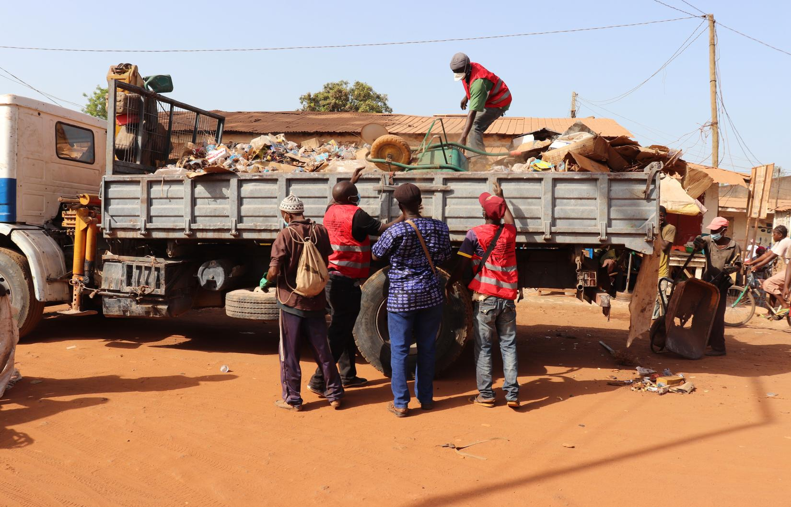

Importancia de cuidar da Água
A importância da água do planeta é de tamanha proporção, posto que é um elemento essencial para a sobrevivência de animais e vegetais na Terra, além de fazer parte de inúmeras atividades dos seres humanos. A falta de água é uma ameaça, uma vez que a água é fonte de vida. Estamos tão habituados à presença da água que só damos conta da sua importância quando ela nos faz falta, mas isso precisa mudar. Preservar os recursos hídricos é preservar a nossa existência. Para se ter uma ideia, a maior parte das células do nosso corpo possui água, por isso ingerir água é uma necessidade do corpo humano. Importância da água para os seres vivos A água é a fonte de vida de todos os seres vivos. Por isso, nas expedições em outros planetas, a água é um dos primeiros recursos procurados, pois pode ser um indicador da existência de vida. Ler mais

Clima
Clima e consequências prejudiciais médias em Bissau no ano todo Guiné-Bissau Em Bissau, a estação com precipitação é opressiva e de céu encoberto; a estação seca é úmida e de céu parcialmente encoberto. Durante o ano inteiro, o clima é quente. Ao longo do ano, em geral a temperatura varia de 19 °C a 35 °C e raramente é inferior a 17 °C ou superior a 38 °C . Com base no índice de praia/piscina , a melhor época do ano para visitar Bissau e realizar atividades de clima quente é do fim de novembro ao início de maio.
Temperatura média em Bissau
A estação quente permanece por 2,7 meses , de 10 de fevereiro a 1 de maio , com temperatura máxima média diária acima de 34 °C . O mês mais quente do ano em Bissau é junho , com máxima de 32 °C e mínima de 25 °C , em média. A estação fresca permanece por 2,3 meses , de 9 de julho a 19 de setembro , com temperatura máxima diária em média abaixo de 31 °C . O mês mais frio do ano em Bissau é janeiro , com mínima de 19 °C e máxima de 32 °C , em média Ler mais...
Residuo
ONU REVELA QUE A CIDADE DE BISSAU PRODUZ DIARIAMENTE 355 TONELADAS DE RESÍDUOS SÓLIDOS
O Programa das Nações Unidas para o os Assentamentos Humanos (UN-Habitat) em parceria com o Programa das Nações Unidas para o Desenvolvimento (PNUD) inicia esta quarta-feira, 4 de maio, a formação teórica e prática sobre o processo de aplicação do método “FUKUOKA”, cujo objetivo é melhorar as práticas na eliminação de resíduos sólidos urbanos nos vazadouros. Na abertura, a Representação Residente do Sistema das Nações Unidas na Guiné-Bissau, revelou que o único vazadouro em operação em Safim representa, sérios riscos ambientais e da saúde pública. Geneviève Boutin, destaca a situação da cidade de Bissau que produz cerca de 355 toneladas diária de resíduos sólidos urbanos, com uma taxa de recolha muito baixa. Ler Mais...
Ar e ruido
A falta de uma legislação especial sobre a poluição sonora tem contribuído para o aumento desta pratica na Guiné-Bissau, apesar dos seus efeitos negativos na convivência actual e na saúde das pessoasUma reportagem da Rádio Sol Mansi (RSM) permite concluir que muitos guineenses sofrem dos efeitos da poluição sonara que piora a noite e impede um sono tranquilo. Na ausência de uma legislação especial sobre a matéria, o especialista em direito do ambiente, Welena da Silva, afirma que, embora as dificuldades, as autoridades competentes podem advertir os infractores baseando nos princípios da lei base do ambiente no seu artigo 20.º. “As autoridades nacionais do ambiente podem advertir as pessoas que causam o dano ao ambiente e a saúde das pessoas. Ler mais...